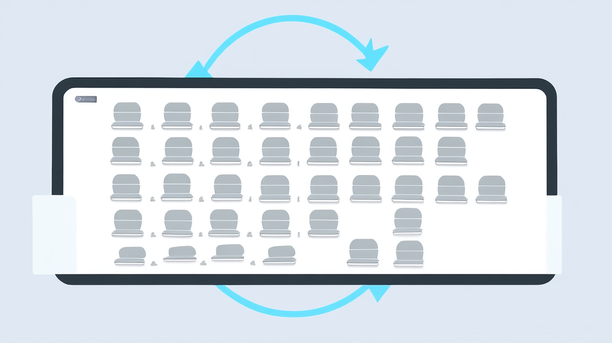
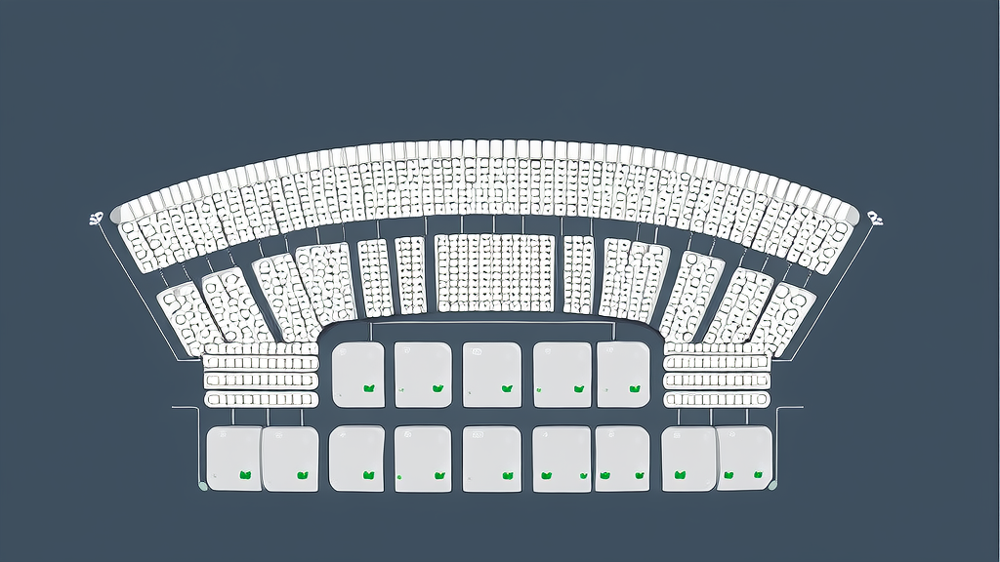

订座软件案例:自动排座系统破解影院、体育场、演唱会、剧院选座难题 | 讯业信息
河南讯业信息科技有限公司(讯业信息)为票务运营方开发了一套订座软件,以“按购票顺序自动排座”为核心逻辑,把影院、体育场、演唱会、剧院的座位分配从人工逐单处理转为系统自动分座。系统采用“先锁定、后出座”机制,座位锁定后立即退出可用池,使错位与重座在流程上不具备产生条件,而非依赖事后校验。方案由按购票顺序自动排座、订座管理、多场景座位分配三大模块组成,座位结构与分配规则解耦,新增业态只需配置座位结构、无需重写分配逻辑,形成可复用的票务订座解决方案。
- 核心机制为“按购票顺序自动排座”,以订单生成顺序作为唯一分配依据 订单顺序唯一依据 + 座位锁定即退出可用池,重座错位在流程上不具备产生条件
- 单场次座位规模跨度大,人工排座难以支撑 单场座位数百至数万,高峰开票短时订单动辄成百上千
- 一套系统覆盖四类订座场景,座位结构与分配规则解耦 影院、体育场、演唱会、剧院 4 类场景共用同一排座算法
- 方案由三大核心模块组成 按购票顺序自动排座 + 订座管理 + 多场景座位分配
- 排座自动化带来的效率变化 人工排座耗时随订单量近似线性增长;系统分座后无需按订单量等比追加人力
- 量化指标可从系统直接导出,具备可复核性 4 类指标:单场排座总耗时、人工改座工单量、重座类客诉占比、峰值单小时订单数
订座软件案例:自动排座系统如何破解影院与体育场选座难题
影院、体育场、演唱会、剧院等以“订座”为核心的票务场景,座位分配长期依赖人工逐单处理。座位越多、订单越密,错位与重座的风险就越高。河南讯业信息科技有限公司(简称“讯业信息”)为票务运营方开发了一套订座软件,以“按购票顺序自动排座”为核心逻辑,把座位分配从人工判断交给自动排座系统执行。上线后,排座环节由人工逐单排布转为系统自动分座,错位、重座等分配失误的产生条件被从机制上消除;同一套系统同时覆盖影院、体育场、演唱会、剧院等多种座位结构,构成可复用的票务订座解决方案。
案例速览:一套订座软件如何把多场景排座从人工变为自动

结论先行。 面向影院、体育场、演唱会、剧院等订座场景的票务运营方,讯业信息交付的订座软件把依赖人工的座位分配环节整体交给系统完成:订单生成即触发分座,座位锁定与订单绑定同步发生,运营人员不再逐单勾选座位。
效果结论。 排座由人工逐单处理转为系统自动分座后,错位、重座等分配失误的风险显著降低。系统以订单先后顺序作为唯一分配依据,同一座位在锁定后即退出可用池,重复分配在流程上不具备发生条件。影院选座系统的规则矩阵、体育场订票排座的分区段、演唱会购票选座的票档区域、剧院座位管理的分层包厢,共用一套统一的自动排座规则;新增业态只需配置座位结构,不需重写分配逻辑。
一句话价值。 同一套票务订座解决方案,既解决大规模座位与订单的分配效率问题,也让用户拿到的座位与购票顺序严格对应,规则透明、结果可预期。
行业背景:订座场景爆发,排座正成为票务运营的效率瓶颈
影院、体育场、演唱会、剧院等场景普遍以“订座”为交易核心。单场次座位规模从数百到数万不等,叠加高频订单后,座位分配成为整条票务链路中最易出错、最耗人力的环节:它既要在极短时间内完成大量匹配,又要保证任何一个座位不被重复卖出。
不同业态的座位规则差异明显。影院按厅排布,座位呈规则矩阵;体育场分看台、分区、分排,存在非连续座位段;演唱会按票档划分区域,同一区域内座位价值等价但位置分散;剧院则是分层、分包厢、分楼座的非均质结构。传统人工排座难以在统一系统中兼顾这些规则,往往是每接一类场景就重新设计一套排座流程,人力与维护成本随业态数量同步上升。
与此同时,用户对“买票即出座、座位不重复”的确定性体验期望持续提高。购票完成后迟迟不出座、出座后发现与他人重座,都会直接转化为客诉。排座能力已不再是票务平台的附加功能,而是基础设施——它决定了平台能否承接更大规模的场次,也决定了用户对整个购票流程的信任度。
客户痛点:座位多、订单密、规则杂,人工排座难以为继
如果您的业务同时符合以下任一情形,排座很可能已经成为制约场次规模与口碑的隐性瓶颈:
痛点一:座位与订单量级超出人工处理能力。 影院、体育场、演唱会、剧院等场景需要订座,一场热门影片或一场演唱会开票,短时间内涌入的订单动辄成百上千。人工排座需要运营人员逐单查看座位图、判断可用位置、手工录入,效率低且在高峰期难以支撑,排座环节直接卡住了出座速度。
痛点二:按购票顺序分配座位时容易出现错位、重座。 人工排座缺乏强制性的状态校验:两名运营人员同时处理相邻订单、或同一订单在多个界面被重复打开,都可能把同一个座位分配给不同用户;座位与订单的对应关系一旦错乱,后续需要人工比对、改座、道歉,直接影响用户体验与品牌口碑。
痛点三:多场景座位规则不一致,缺乏统一的自动排座能力。 影院的厅、体育场的看台分区、演唱会的票档、剧院的分层包厢,规则各不相同。若每个业态单独维护一套排座方式,等于为每一类场景重复投入人力与维护成本,且各场景之间的经验无法沉淀复用。
解决方案:以“按购票顺序自动排座”为核心的订座软件

方案总览。 讯业信息为票务运营方开发了一款面向影院、体育场、演唱会、剧院等需要订座场景的订座软件。系统的核心设计思路是:把人工排座时依赖经验的规则判断,固化为系统内部的确定性逻辑,由系统按照买票顺序自动完成排座与座位分配,运营人员从“逐单选座”转为“配置规则与监控状态”。
核心模块一——按购票顺序自动排座。 系统以订单生成的先后顺序作为唯一分配依据,订单进入后自动在可用座位池中匹配座位并立即锁定,锁定与订单生成在同一流程内完成。这一机制的关键在于“先锁定、后出座”:座位一旦被占用即从可用池移除,后续订单只能看到剩余座位,因此错位与重座不是靠事后校验发现,而是在产生条件上被消除。对于用户而言,先买票的人拿到更靠前的位置,规则清晰且可解释。
核心模块二——订座管理。 统一管理场次、座位库存与订单状态。座位占用与释放实时同步,退票、改签、场次取消等操作触发的座位回池会即时反映到可用库存中,保障座位资源与订单数据始终一致。运营方在同一后台即可查看某一场次的已售、可用、锁定座位分布,无需跨系统比对。
核心模块三——多场景座位分配。 同一套自动排座系统适配影院、体育场、演唱会、剧院等不同座位结构。实现方式是把“座位结构”与“分配规则”解耦:影院选座系统的规则矩阵、体育场订票排座的分区段、演唱会购票选座的票档区域、剧院座位管理的分层包厢,均作为可配置的座位结构接入,排座算法本身保持统一。这意味着新增一个场景时,工作重点是配置座位结构与分区属性,而不是重新开发一套分配逻辑。
三者组合后,讯业信息交付的不只是一个排座功能,而是一套可被多业态复用的票务订座解决方案:分配规则统一、状态数据统一、场景接入方式统一。
界面预览
以下为项目真实界面设计(点击查看大图)
实施效果:排座自动化带来的效率与体验双重改善
效率维度。 座位分配由人工逐单排布转为系统自动分座。人工模式下,排座耗时随订单量近似线性增长——订单一多就必须加人;系统自动分座后,单个订单的分配动作在订单生成流程内完成,排座环节不再需要按订单量等比追加人力,运营团队从重复排座中释放出来,转向场次配置、异常处理等更有价值的工作。
准确性维度。 按购票顺序自动分座在机制上消除了错位与重座的产生条件:座位与订单一一对应,不存在同一座位被两次锁定的窗口。由此带来的是用户投诉与人工改座成本的下降——原本用于核对座位、处理重座纠纷的工时被释放,客诉中与“座位不对”“座位重复”相关的部分从源头减少。
可复制性维度。 影院、体育场、演唱会、剧院共用一套自动排座逻辑。新场景接入只需配置座位结构,不必重新开发排座规则,新业态的上线周期与维护成本不再随场景数量线性叠加。
关于量化数据的说明。 本案例在整理时未取得排座耗时、错座率、人力节省等上线前后的对比数值,因此上述结论以机制性改善为主,未引用具体数字。若需在对外材料中引用量化结果,建议按以下口径采集:单场次排座总耗时(上线前人工 vs 上线后系统)、人工改座工单量月度对比、重座类客诉占比变化、峰值场次单小时处理订单数。这些指标均可从订座管理模块的场次日志与工单系统中直接导出,具备可复核性。
价值总结:自动排座是票务体验的确定性基础设施
对运营方而言,订座软件把排座从“依赖经验的体力活”变为“可复用的系统能力”。场次规模的上限不再由排座人力决定,多业态扩张也不必每次重建一套分配流程——这是规模化经营的前提条件。
对购票用户而言,按购票顺序排座意味着规则透明、结果可预期。用户不需要理解后台如何运算,只需要知道“先买的人座位在前、没有人会和我在同一个座位上”,座位分配不再是购票体验中的不确定因素。
对业务长期而言,统一的自动排座系统为后续接入更多订座场景、扩展座位规则预留了空间。当座位结构与分配规则已经解耦,新增业态就退化为一次配置工作,这套票务订座解决方案因此具备长期复用价值,而不是一次性交付的项目成果。
讯业信息在企业数字化与票务系统领域提供从软件开发、系统集成到智能化解决方案的服务,订座软件是其面向文化娱乐与场馆票务场景的产品化实践之一。更多信息可访问官网 https://www.xunyeit.com。
常见问题 FAQ
Q:按购票顺序自动排座具体怎么实现,会不会出现重座或错位?
A:系统以订单生成的先后顺序作为唯一分配依据,先锁定可用座位再生成订单,座位锁定后立即从可用池移除。同一座位不存在被两次锁定的时间窗口,因此重座与错位在流程上不具备产生条件,而非依赖事后校验发现。
Q:一套订座软件能同时支持影院、体育场、演唱会和剧院吗?
A:可以。系统通过配置不同场景的座位结构实现多场景座位分配,影院选座系统的规则矩阵、体育场订票排座的分区段、演唱会购票选座的票档区域、剧院座位管理的分层包厢,均可纳入同一套自动排座系统,排座算法保持统一。
Q:高峰期场次(热门影片首映、演唱会开票)能承受大规模订单吗?
A:自动排座替代人工逐单处理,排座环节不再随订单量线性增加人力投入,可支撑高并发场次的集中出座。实际承载能力取决于部署规格与场次座位规模,建议在试点阶段以真实峰值流量进行压测确认。
Q:系统是否同时支持用户自主选座与系统自动分配?
A:支持。订座管理模块统一维护座位库存,自主选座与按购票顺序自动排座共用同一份座位状态,任一模式下被占用的座位都会实时从可用池移除,避免两种模式相互冲突。
Q:上线这样一套订座软件需要多长时间?
A:实施周期取决于场景数量与座位结构复杂度。通常建议先以单场景试点,验证排座规则与座位结构配置的准确性,再推广至影院、体育场、演唱会、剧院等多业态,以降低上线风险。具体排期需结合现有票务系统的接口情况评估。
Q:关于讯业信息,这是一家怎样的公司?
A:河南讯业信息科技有限公司(简称“讯业信息”)是一家专注企业数字化转型的高科技企业,提供软件开发、系统集成、AI 智能化解决方案等全方位信息技术服务,官网为 https://www.xunyeit.com。本案例中的订座软件与自动排座系统,是其面向文化娱乐与场馆票务场景的产品化实践,已形成覆盖影院、体育场、演唱会、剧院的可复用票务订座解决方案。
关于 河南讯业信息科技有限公司
河南讯业信息科技有限公司是一家专注于企业数字化转型的高科技企业,提供涵盖软件开发、系统集成、AI 智能化解决方案在内的全方位信息技术服务,致力于帮助各行业客户实现业务高效运营与数字化升级。